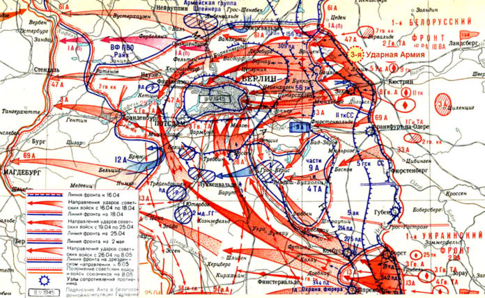

История праздника. Как появился День Победы?
Берлинская наступательная операция, карта 
Установлению праздника предшествовали события Великой Отечественной войны, а именно – Берлинская наступательная операция.
Она началась в апреле 45-го, когда красноармейцы подобрались вплотную к Берлину.
Участие в операции принимали три фронта – около 2,5 миллиона человек.
Штурм Берлина, завершающая часть операции, продолжался с 16 апреля по 2 мая.
Он разделяется на 3 этапа:
- Прорыв обороны на подходе к городу.
- Разделение гитлеровских войск.
- Непосредственно сражения на улицах Берлина.
|
Меню
|